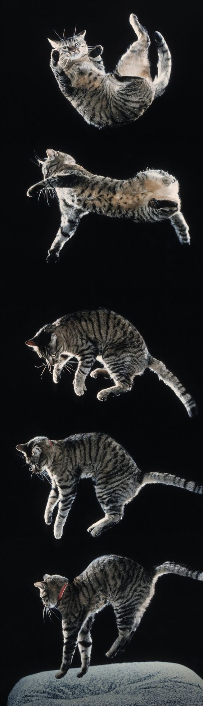

Это моя первая HTML страница
О себе
Меня зовут Конченко Настя. Родилась я в Самаре и учусь в аэрокосмическом университете. Люблю всякое ,')
Какие фильмы мне нравятся
Какая музыка мне нравится
- sade
- hehehe
- adrianne lenker
Как со мной связаться eto ya
